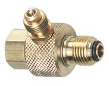

Go Home
Site Map
Go Home
Site Map
How do I test the fuel pressure?
TBI doesn't have a Schrader valve.
The adapters are not made to be use permanently. Avoid bending the lines. If needed, remove clamps holding the lines and make sure nothing will hit them.
Some will tell you to use something like this...

It goes in place of fuel filter. This one is made by OTC Tools. (It has been update.) There's other. It will work but there is another option... 87-88 L4 owners buy EQUUS3641 Equus GM TBI Fuel Injection Adapter. It comes with an extension hose. Use search to get best price.

It comes by itself or with a gauge from Actron. See auto part store near you or buy it online. (See link to order online. Under "PARTS & ACCESSORIES" is adaptor only.)
Where does it go?
They work with or replaced fuel filter. 87-88 Fiero fuel filter is under the car.
Big type
Temporarily to replace the fuel filter.
Small type
Connected to inlet or outlet side of the fuel filter.
700 TBI 87-88 Fiero... It doesn't fit in the TBI without bending the lines. To avoid going under the car to access filter, try rubber fuel line by the battery. (I have not test it!)
What is the fuel pressure?
Pressure is 9-13 PSI. All Years.
Notes:
If testing at fuel filter, make sure it flows. A block fuel filter is
not good and test filter inlet causes an error in testing.
Too low? First Pinch off return line for a minute. If pressure is high now then TBI regulator has problems.